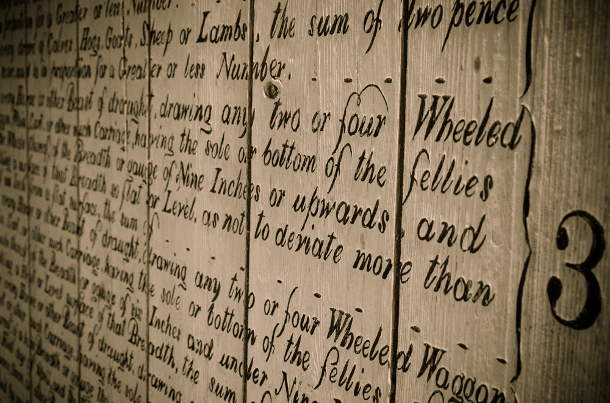

I KEEP six honest serving-men (They taught me all I knew);
Their names are What and Why and When And How and Where and Who.
what?
I KEEP six honest serving-men (They taught me all I knew);
Their names are What and Why and When And How and Where and Who.
Ryard Kippling
A very valuable phrasing to remember the important questions; in this discussion the two most important ones are the Why and the How. Will save the why to the end. Firstly we'll review some thoughts on the what.
things go here
things go here
Composition, the act of chosing how How to choose include in viewfinder. How to pick settings on the camera How to adjust the images on your computer or in the darkroom How to control the world before the camera. https://photographylife.com/what-is-composition-in-photography
>When a rule works it works - yippee; but it can be 'forumalic' Breaking a rule it won't make the image; but it can be an 'edge'
"Consulting the rules of composition before taking a photograph is like consulting the laws of gravity before taking a walk."
Edward Weston
So after coming back from the walk; gravity can explain what happened and why. But it is worth knowing the basics - i.e. you can't fly. So you can use the 'rules of composition' to help asses and 'frame the images' What did you see
Eye
Edges
Elements
Ego
Balance
Is the image aligned correctly or not?
Logic
Is the arrange of the visual elements effective?
Purpose
Is their a strong centre of interest, pattern or design?
Clarity
Is it simpkle, yet comnplete and without distracting elements?
Focus
Is the image sharp with approraite depth of field?
Cleanliness
Is it free of marks, dust spots, lens flare, compression articfacts?
Exposure
Too light or too dark? Overall or 'burnt-out' highlights 'blocked-up' shadows?
Lighting
Does the light give enough contrast, has the colour temperature been handled?
Colours
Does it have natural colours? Or is there a colour cast?
"It may be a good thing to copy reality; but to invent reality is much better."
Giuseppe Verdi
Camera never lies; it merely presents it's own view of reality.
"In art there is only one thing that couns, the bit that cannot be explained"
Georges Braque
"A work of art that did not begin in emotion is not art"
Paul Cezanne
"Criticism, like rain, should be gentle enough to nourish a man's growth without destroying his roots."
Frank A. Clark